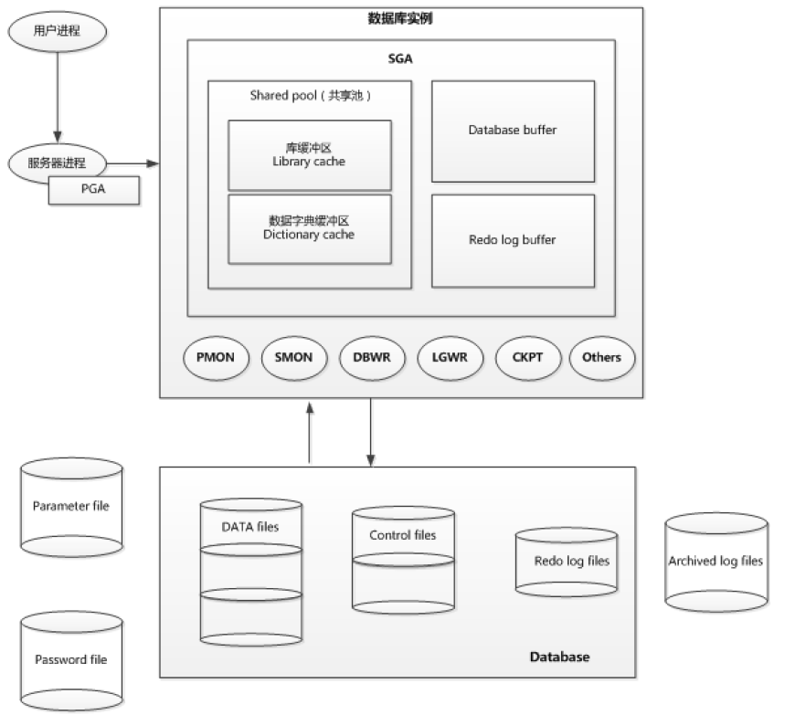

Oracle体系结构
一、体系结构图

oracle实例=SGA区+后台进程
oracle服务器=oracle实例+oracle数据库
数据库实例启动实质上即为：分配SGA区，启动后台进程
Oracle 实例
1、是访问Oracle 数据库的一种方式
2、通常只开一个且仅开一个数据库
3、由内存结构和进程结构组成，即SGA区+后台进程
连接Oracle实例：包括建立用户连接和创建会话
Oracle数据库
是作为整体的数据集，由四类文件组成：Data files, Control files, Redo log files, parameter file
二、物理结构（四大文件：data files ,control files,redo-log files，Parameter file）
主要由三类文件组成：data files ,control files,redo-log files
1.data files： 数据文件，存放基本表信息（即表中数据等）、索引信息（系统内建有索引表）、回退信息（主要为数据的rollback）、临时信息（如有orderby 等操作时系统有临时信息）、系统引导信息（如数据字典等）
2、control files：控制文件（二进制的）。存放库物理结构、库名、库创建日期、序列号（存有同步信息）；控制文件至少有两个一摸一样的，用做备份用参数Control files=/../../文件名1,/../../文件名2；指定
3、redo log files：回退日志文件，存放修改前后的信息，主要用于数据的恢复，一个数据库至少有两个redo log files文件，以便可以循环记录信息
注：三类文件都有序列号，必须同步才能使用，且以Control files中的序列号为准，其他的必须与其保持一致
除了上面三类文件还有：Parameter file(参数文件)，Password file(口令文件)，Archived log files（归档文件）等
参数文件：有二进制、文本两种，用于设定参数的值。二进制参数文件可以及时更改，即时生效；文本参数文件需重启
口令文件：可用orapwd.exe 建口令文件。拥有sysdba权限的用户存在口令文件中，数据库未打开时即可使用，而普通用户需要数据库启动后方可登陆
可以 connect 用户名/口令 as sysdba
归档文件：存放归档的日志文件等，即有日志文件循环满时拷贝出去归档。在一个日志文件写满切换到另一个日志文件的同时联机的日志文件将拷贝出归档，并更新序列号（每换 一次，序列号加1）。若数据库允许归档方式的恢复时系统会自动生成归档文件，可用于恢复数据库，恢复到错误之前的点上。
三、内存结构（三大内存：Database buffer，Shared pool，Redo log buffer）
主要分为：PGA区，SGA区
PGA区：程序的全局区，不可共享，存放用户信息。在服务进程启动时启动
SGA区：系统全局区，为所有用户共享；在实例启动时分配，是实例的基本组成部分
Shared pool 大小由Shared_pool_size决定
Data Dictionary cache:数据字典缓冲区，在数据库启动时将最常用的数据字典存入缓存区，在系统启动时即放入
Library cache :库缓冲区：缓存SQL脚本，分析表，方案等，PL/SQL的过程；分为：SQL区，PL/SQL区；使用最近最少使用淘汰算法（LRU）
Database buffer
Dirty buffer:存放已经修改并且commit但仍未写入磁盘的信息
Free buffer :内存与磁盘上对应信息一致的（如已经写入磁盘后的）
Pinned buffer:正在更新，尚未提交
所有的数据更新都首先与data buffer交互，然后才能与磁盘交互，Oracle 的I/O最小单位为block(块)，而不是以数据为单位，因此都要经过data buffer的缓冲。
当读入时存入free buffer,当free buffer 不足时系统将dirty buffer中存入磁盘而变为free buffer,
Data buffer 由db_cache_size 决定大小。主要是为了提高操作数据的效率，缓冲区采用最近最少使用淘汰算法（LRU）
Redo log buffer
记录了对数据库数据的所有更改，主要是为了恢复
Java pool（可选）
当前端为java开发时，需手动设置，用于记录java代码
Large pool（可选）
当为共享服务器时，需手动设置（使用的不是LRU管理）
控制参数：
SGA_MAX_SIZE :设置SGA区的大小，可以动态调整
Db_cache_size :设置database buffer的大小
Shared_pool_size 设置shared pool 大小
Log_buffer:设置redo log buffer的大小
Large_pool_size 设置large pool的大小
Java_pool_size 设置java pool的大小
四、进程结构（五大进程：DBWn,LGWR,SMON,PMON,CKPT）
用户进程：连接服务器时在客户端产生
必须先建立连接，不直接与Oralce服务器交互，而是与服务器进程交互
服务器进程：客户端连入时服务器完成客户端的请求操作
直接与Oracle服务器交互，接收用户进程的请求，完成操作并返回结果。服务器有专用服务器、共享服务器两种方式：
专用服务器：服务器进程与用户进程一一对应，但由于资源总量有限，服务器进程的总量是有限的，因此连入的数量也是有限的，当达到上限时用户无法连入。
共享服务器：系统启动时即创建一定数量的服务器进程，当用户连入时，选择空闲的服务器进程为之服务，而且共享服务器中服务器进程也是可以动态生成的，可以设置服务器进程生成的最大数量。
后台进程：主要有：DBWn,LGWR,SMON,PMON,CKPT 此为必须的，其他的如ARCn,RECO,LCK等是可选的。在实例启动时启动。
1、DBWn：表示最多可以产生10个DBWR进程，命名为DBW0..DBW9
作用：将database buffer 的buffer cache 中的内容写入磁盘，当单CPU时只能有一个DBW0，当有多个CPU时才能有多个DBWR进程。
启动条件：一般情况下DBWR进程都处于休眠状态，当满足条件时才启动：
没有free buffer 时，即没有空闲buffer则需要写回磁盘。
dirty buffers中数据达到一定阀值时。
超时发生时（默认3秒）
检查点发生
RAC ping连接请求
表空间offline
表空间read only
表drop或TRUNCATE
表空间开始备份
在以下情况下检查点会发生：
日志切换
用户发命令强制产生检查点
数据库关闭时：以normal, transactional, immediate方式；
某表空间转为offline
2、Log writer（LGWR）
作用：将log buffer里的内容写入log文件
启动条件：
buffer中的数据量达到1/3.
数据量达到1m
时间间隔到时（规定的时间间隔是3s）
检查点发生
在DBWn写之前
commit 命令
其实：检查点发生则DBWn将启动
当U2发出commit命令时则启动 log writer 的LGWR 进程，将U1，U2的修改前后信息写入log文件，当发生错误而恢复时，有专门的进程（SMON）使用log文件进行恢复，根据错误发生的记录进行redo操作，利用回退段undo，使错误发生前没有提交的操作全部撤销，从而得到一个完整的正常系统状态。若U2提交了commit而U1没有提交，那么此时发生故障，要进行恢复，则U2可以恢复到当前commit后的状态，所有U2以前的操作将保留有效，而U1则回退到上一个commit的状态，这段时间内的修改将失效，由undo回退。整个系统回退到一个完整的正常状态。
只有LGWR写完成时commit操作才算完成，因此不会出现提示commit完成而没有将相应的日志写入。可以对应这种情况：当提交commit 命令后，系统提示操作生效，而此时由于内容不多，操作的结果都由系统暂时存在内存中而没有即时写入磁盘，而此时系统崩溃，则内存中的数据丢失，而磁盘上也没有保留，则在下次启动时，系统会自动调用SMON进程进行恢复，从而不会使真正更新过的数据得不到保留。
3、SMON 系统监控进程
作用：
1.实例恢复（由系统自动调用）：
a、将redo log文件中提交的信息重做一遍
b、将没有提交的信息进行回退，即undo；
c、将数据库打开，用户可以登录
2.回收临时段
4、PMON 进程监控进程
作用：检查到别的进程失败后清理垃圾用的：回退事务、释放锁、回收释放资源、报告失败信息。
5、CKPT 检查点进程，在检查点发生时启动
作用：
当检查点发生时通知DBWn；
使用检查点的信息来更新数据文件头；
用检验点的信息来更新控制文件
可选的：ARCn：归档进程，在归档方式下才有该进程，将写满的log file 写出来，写到ARC01.file等文件中；REC0:恢复进程，运行在分布式环境下；LCKn：锁进程，在并行服务器方式下。
执行一条SQL语句
1）连接实例，使用到用户进程，服务器进程
2）执行语句，后台进程使用哪个将由SQL语句决定：查询语句、DML语句、commit将会使用不同的后台进程，也可能部分后台进程不参与该语句的执行
五、逻辑结构
数据库由一个或多个表空间（tablespace）组成
表空间
System-----------------------系统引导段->数据字典
Undo tbs---------------------撤销段（回退段）->修改前的信息
Temp--------------------------临时段->临时使用的（如order by操作）
Users--------------------------数据段->每建一个表则对应一个数据段
Index--------------------------索引段->索引信息（关键字，RowId）
表示一个或多个组成
撤销段：作commit 操作后其中的信息就没用了，自动被重用；作rollback时就要用到其中的信息，回退后该段空间又可被重用。
I/O的最小单位是块，而分配的最小单位是区，一个区由一个或多个块组成。
建表时系统先分配：initial extent 空间，当不断插入数据使空间满时，将再次自动分配空间next extent,当再次不足时将再次自动分配next*(1+PCTINCREASE),再次将为next*(1+PCTINCREASE)2，下次将为next*(1+PCTINCREASE)3；如此下去。其中，next是设定额下一个分配的空间大小，PCTINCREASE则为递增的比例。另有：maxextent=100,设置最多只能分配100个区，minextents 表示建好表后最少要分配几个区。Initial extent, next extent, PCTINCREASE,maxextent,minextents一个区的五个参数，与datafile里的五类信息相对应。
当插入数据受限时有可能是下列原因：
1、table space占用完，即没有了表空间
2、分区数达到上限，此时可以调高上限，即调高maxextents的值
3、当maxextents值达到系统设定的上限时，可以重新建表空间，调高initial extent
逻辑结构与物理结构的对应
物理上数据库由data files,redo log files,control files组成，任何一个表空间至少对应一个或多个data files,多个data files的总和即为表空间的大小，所以当表空间的大小不足时解决的办法之一可以是再增加data files，而一个data files 只能对应一个表空间。段不可以跨越表空间，但可以跨越同一个表空间的不同的data files，段的所有信息都存在 data files 文件中。
建表时可以自己指定表空间以及相应的分区参数
Create table student(建表语句...) //建表时可以直接指定表空间和存储参数
Tablespace 表空间 index…
Storage ( initial 128k // 初始区大小
Next 128k //次分区大小
Pctincrease 100 //扩充的百分比
Maxextents 10000 //最大的分区数
)
如果没有指定相应的参数：安装建库-》建表空间-》建撤销段-》建用户-》给用户授权-》用户登录建表
注：建表空间：系统默认system tablespace，其他表空间可以在建库之后建立
建表空间：
Create tablespace test
Datafile '该表空间在操作系统中的路径\文件名.dbf' size 100m //设置大小
… …
Default storage(initial 128k
next 128k
pctincrease 100
maxextents 10000
)
建用户：
Create user student identified by student //用户名：student,密码：student
default tablespace test //设置用户的默认表空间
temporary tablespace temp //临时表空间
默认表空间表示的是：当用户新建表时（或任何对象），当未指定表空间时，则将使用默认的表空间，使其存放在该表空间中。
临时表空间：当使用到排序是需要使用临时表时，使用在临时表空间的临时段，使用完后由SMON自动回收。
· 至于在建表时若指定了存储参数，则以此参数为准，若没有指定则用其所在表空间的存储参数（即在建表空间时指定的默认存储参数），如果在建表空间时也未指定
存储参数，则使用系统默认的参数，所以平时建表任何存储参数都不指定也是完全可以的。
· 区的分配等都由系统处理，但可以人为修改某些参数优化系统。
· 二进制参数修改，可以用命令修改：alter system set 参数=…;